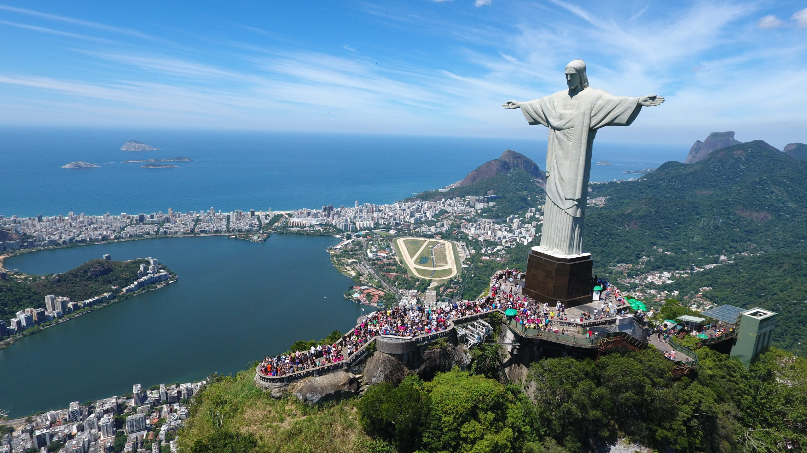

Explore momentos inesquecíveis das minhas aventuras pelo mundo. Cada foto conta uma história e revela a beleza de diferentes culturas e lugares.
Coliseu, Roma – Senti a grandiosidade da história ao caminhar por este monumento milenar.Estádio de São Januário, Rio de Janeiro – A paixão pelo futebol é palpável neste icônico estádio.Lagoa do Portinho, Parnaíba – Um paraíso escondido com águas cristalinas e natureza exuberante.

Cristo Redentor, Rio de Janeiro – Uma vista de tirar o fôlego sobre a cidade maravilhosa.